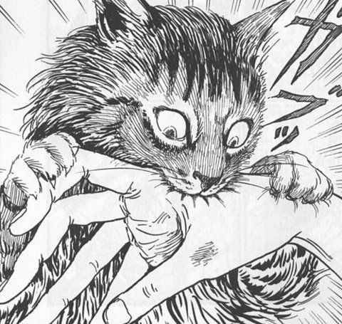

Junji Ito's Cat Diary: Yon & Mu
Junji Ito's Cat Diary: Yon & Mu (Japanese: 伊藤潤二の猫日記 よん&むー, Hepburn: Itō Junji no Neko Nikki: Yon & Mū) is an autobiographical seinen manga written and illustrated by Junji Ito.

Junji Ito's Cat Diary: Yon & Mu (Japanese: 伊藤潤二の猫日記 よん&むー, Hepburn: Itō Junji no Neko Nikki: Yon & Mū) is an autobiographical seinen manga written and illustrated by Junji Ito.
Look him!
Cleaning!
Two cats!
Another two!
Junji Ito's Cat Diary: Yon & Mu is an autobiographical manga that draws on manga artist Junji Ito's personal experience with cats. It features various anecdotes about living with cats, which center on J-kun, a horror manga artist; his fiancée, A-ko; her family cat, Yon; and a Norwegian Forest cat, Mu.
-Wikipedia
Best known for his horror manga Tomie, Lovesick Dead, Uzumaki, and Souichi, Ito was approached by his editor to write a manga about cats.